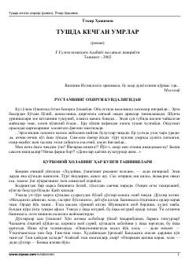

TKInson taqdiri va hayot sinovlari haqidagi ta'sirli o'zbek romani.
O'tkir Hoshimovning ushbu mashhur romanida inson taqdiri, hayot sinovlari va murakkab kechinmalar chuqur badiiy tilda tasvirlangan. Asar qahramonlarining hayot yo'li va ichki olami orqali o'quvchini o'ylantiradigan hayotiy haqiqatlar ochib beriladi.